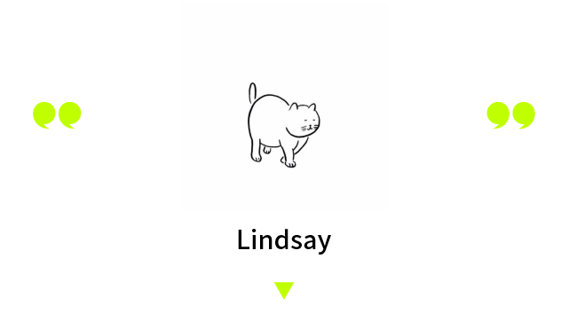
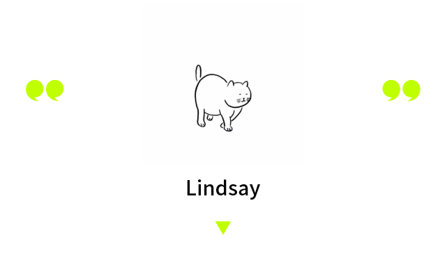
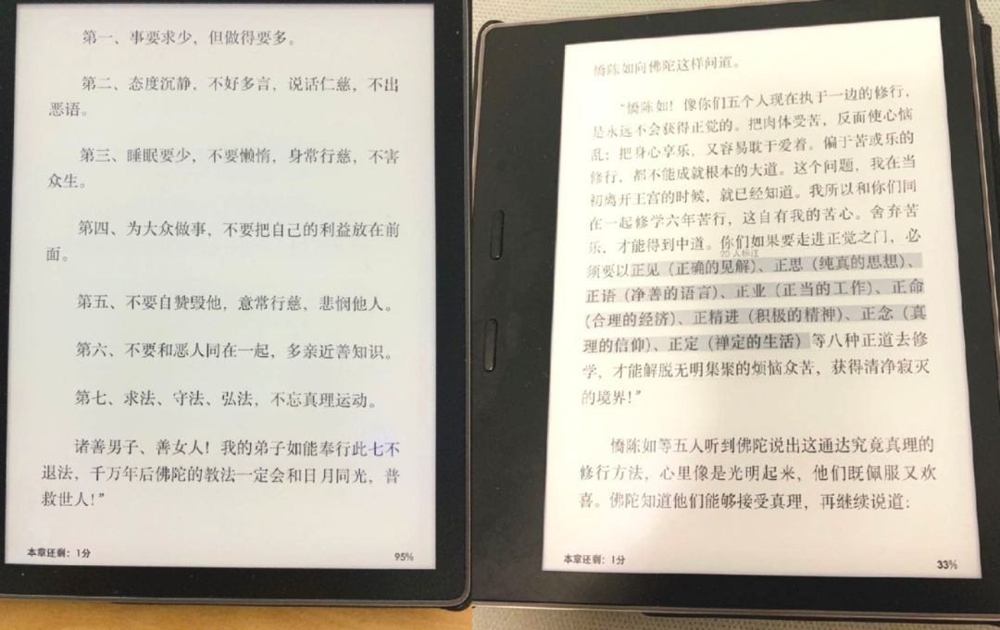

「千奇百怪的出警，都跟新冠肺炎有关」
原文链接 备份链接 杨普（化名）是湖北的一名民警，他所在的县级市距离武汉约50公里，有百万人口。在疫情尚未明朗前，当地曾有大量居民往返武汉，包括从武汉返乡过年的打工者。 当疫情爆发点和重灾区被锁定在武汉后，大量目光也随之被吸引而去。一旁的 …

 

新冠给了 2020 一个噩梦般的开局，病毒爆发得快，所有事情发生得也快。中国在经历一场猝不及防的劫难，世界也如临大敌，国际卫生组织宣布 “突发公共卫生事件”，一个个国家封关，大批航线停航，国家乃至世界层面的应急、保全决策都在极短的时间内推出。
1 月 31 日新加坡公告封关；2 月 1 日一早，我在新加坡转机飞悉尼的机票被取消；2 月 1 日下午，澳大利亚总理宣布为期 14 天的限境令，即时生效。作为一个在悉尼上学的大学生，学校回不去了。
短短两天内我的学业一下子停了摆。
我家住广东，现在是全国除湖北外确诊病例最多的省份。当下学业没有着落，为了防疫被迫居家，这对我这种平时看书工作要去外面，越无聊越想出门的人来说，实在不习惯。日常生活充斥着警惕，口罩湿巾洗手液已是必备，就算外出，碰到人就绕着走，拿回家的快递也要在门外拆了才能进门。
在家的日子，我不用再为上课上班订闹钟，却和我妈每天为了抢口罩定闹钟。广州每晚八点可以在 “穗康” 的小程序预定第二天的五个口罩，于是我们每天 7：55 的闹钟，7：59 开始拼命按 “我要预约购买”，今天为止试了 10 天了，一次都没有成功过。
 我想念广州有灯火和人烟气的日子，图片来自作者
我想念广州有灯火和人烟气的日子，图片来自作者
新冠的爆发和蔓延让我一次次想起 “天灾” 这个词，当然也可以把这次疫情看作是乱吃野味而遭致的 “人祸”，但对绝大多数人来说，我觉得这是一个从天而降的、没有理由的横祸。尤其是对于患病的人、在疫区中心的人，这是一个搭进了性命的灾难。
截至昨天（2 月 9 日 14 时），全国 37262 人确诊新冠。这放在 14 亿的人口中比例似乎不大，但我总想起那句话：对于中招的个人和家庭来说，这就是一个 100%。
如果把 “幸运” 和 “不幸” 放在一个刻度表的两端，当下整个世界都倾向了 “不幸”，而在这个大 “不幸” 中，我其实是幸运的：目前身体健康，亲友平安。在这个大幅度停摆的时间里，我日常还能抱怨一句宅的痛苦、居家的无聊，以上种种，哪个不是 “幸运”？
当然，要说在我眼中有没有比我更幸运的人？有的。
小信是我在悉尼读书的同学，澳洲宣布限境令的时候她正好托运完行李，在安检口排队。这是一趟青岛 – 首尔 – 悉尼的航班，突然那边官宣封境，但这边航班并没被取消。
那这一程，究竟走不走？
“一下还挺恐慌的，因为还在安检口没进去，就想要不就不上算了。” 小信说。
“即时生效” 的澳洲禁令给人留下一个盲区：宣布的时间是下午两点，那这个时间点上正在飞机上飞的人怎么办？隔离、遣返、还是顺利入境，这个一刀切的政策，把不少中国学生放在了国界与国界之间，陷入了巨大的由不确定性所引起的惊恐不安中。
禁令的宣布也引爆了小信的朋友圈，一时间大数量并且真伪难辨的信息，让小信的心里一直摇摆不定。
“就很多人在分析这个政策，分析的又不对，但话说得又特笃定。”
最终她还是选择走过安检，搭上这一趟飞机。好在一路顺利，中转首尔时工作人员帮忙确认，落地悉尼后也是一路插卡、过关、行李、申报并无异常。
Astrid 是另一个在我看来相对 “幸运” 的朋友。她是我在悉尼同宿舍的同学，春节没有回国，家乡湖北十堰（截至 2 月 9 日 14 时，确诊 467 例，无人死亡，治愈 40 例）。
“我原本大年三十当晚九点半的机票，但我爸爸早上给我发消息，说死亡人数到 17 例，最好别回了。那之前一两天一直很挣扎，一直想到底回不回中国？到底飞哪安全？” 她和我说。
为了能回家，在此之前 Astrid 已经几次改签，把武汉的机票高铁都改到了郑州。
但看着疫情日益严重，她最后还是一个狠心，在起飞前的三个小时取消了机票，成为在悉尼过年的 “留守儿童”，“有幸” 不用亲身参与这场苦难。
 过年时吃的饭，图片来自 Astrid
过年时吃的饭，图片来自 Astrid
但即便如此，生活也过得并不轻松。这次生活停摆的幅度，或许是和平时代下二十多岁的我们经历过的最大的一次。
“后悔没有回家吗？” 我问Astrid。
电话那头她好像有句话马上要冲出口，但又给咽回去了。
她想了想，冷静地说：“综合的话，没有说庆幸还是遗憾，我觉得我目前选择是正确的。我有工作在这边，24 号武汉封城，25 号我家也封了，那我就回不来了。第二是春运我回湖北，难免会在路上遇到感染的人，即使我年轻我抵抗力好没有被感染，那我也有可能把病毒带回家，这也是我当时下定决心把机票取消的原因，我觉得是对的。”
这个答案正确、理性。
“但如果是他们感染了需要我照顾的，那我肯定不管了, 肯定回去。” 她补了一句。
在世界的另一端看着家乡成为疫区，心里必然是不好受的。
她现在每天睁眼的第一件事就是看十堰增加了多少病例，有什么新闻，一边心酸一边看。春节是个团聚的日子，灾难下的春节即使不能同庆，本来可以的话，也希望有难能一起扛。
但说到底，距离摆眼前，海外 “留守” 的人更多的只能做个旁观者：听说哪个家人轻微感冒了，哪个朋友今天有点烧了，哪家医院又没有床位去不了了。而实际能做的，撑死只是多看点手机、多发点消息。
“我每天都给他们（家人）发微信，特别是 23 号封城以后。新闻啊、朋友圈有用的消息啊、普及病毒的知识啊、怎么防护、怎么饮食、怎么戴口罩、怎么增强免疫力…… 我有个仅对家人可见的朋友圈，我发现那三四天我特疯狂，一看到有用的就往上传，一天十几条消息。” Astrid 说。
 和家人的聊天记录，图片来自 Astrid
和家人的聊天记录，图片来自 Astrid
现在是澳洲大学的假期，Astrid 的工作是在一家叫 Urbanest 的商业学生公寓。那里面住的中国学生不少，二月份临近开学，原本应该是入住的高峰期，现在却因为新冠和封关变得冷清。
“有一个 2 月 1 号早上来 check-in 的，早上 10 点到，封关和隔离的政策是下午。我们就和他说你需要隔离 14 天了，他说 ‘好’。”
这样一句轻描淡写的 “好” ，也不知道背后藏的是什么样的心情。
天天是我宿舍的另一位朋友，“有幸” 在澳洲封海关之前从北京飞回悉尼，但现在正在被宿舍要求一个人自我隔离，14 天不能出门，不能和宿舍的其他人接触，日常用品和吃的全部从网上订，拿外卖只能用宿舍后门。
“那每天都干嘛呢？” 我问她。
“看课外书，和家人朋友视频。”
“心里觉得还好不？”
“挺压抑的，不过有时也挺安静的。我是佛教徒，我们每天都要诵心经和祈愿文回向，这个比较支撑我吧。”
天天最近读的书，图片来自天天
大夏天的澳洲蜘蛛虫子多，她今天突然发消息说在浴室发现了个蜘蛛，但都没法找人来帮忙，我也只能远程、好像很不走心地和她说句 “小心点”。
被卡在国内的人羡慕那些在国外的能够照常上学，身在国外的心酸国内的有家人陪伴。我们都爱比较，看着别人的都觉得更好。
不过天天和我说：“我一直觉得世界上没有完美的地方，或者说每个地方都是完美的，自由对于我来说也不是在哪里，得在自己的内心找。国内国外各有好处吧，在国内有家人的陪伴和熟悉的一切，在这边就是靠独立和慎独。”
在这篇文章写到一半的时候，我收到学校宿舍给我发的邮件，大意是由于新冠的爆发，让我在 48 小时内决定是否取消新学期的入住预定，不决定的话 3 天后起是 1000 澳币的退款费，10 天后就是已经交了的一学期房租直接打水漂。
自觉是要 “流落街头” 了，我不抱希望地回了封邮件问，“现在这个情况实在说不准，能不能延期？” 没想到他们很快回了信，说会考虑我的提议，而且会 ASAP 再和我沟通。
希望这个 ASAP 是个好兆头吧，这个阴沉沉的天，请赶快亮。
// 编辑：Alexwood
在这次疫情中，你是否被迫改变了自己的生活习惯，你和周围的人产生了怎样新的关系，你获得了哪些观察和思考？如果你有想法想要分享，请发送电子邮件到 tougao@yishiyise.com，注明 “武汉呼叫”，我们的编辑看到后可能会与你联系。
2019 年年末的时候我们希望每个人都能在 2020 年更脚踏实地一点，而 2020 如此凶猛，当我们都困在这场灾难之中，每一个你身边的故事带来的感受或许都将指向我们的未来。


原文链接 备份链接 杨普（化名）是湖北的一名民警，他所在的县级市距离武汉约50公里，有百万人口。在疫情尚未明朗前，当地曾有大量居民往返武汉，包括从武汉返乡过年的打工者。 当疫情爆发点和重灾区被锁定在武汉后，大量目光也随之被吸引而去。一旁的 …
原文链接 备份链接 【财新网】（记者 邸宁）新冠疫情防控进入关键时期，重症病例不断增加，降低病死率，除了对重症患者进行支持救治，预防轻症患者疾病进展同样重要。 根据国家卫健委官方数据，截至2月9日24时，新冠病毒新增确诊病例3062 …
原文链接 备份链接 【财新网】2020年2月10日，外交部发言人耿爽主持网上例行记者会。 首先向大家通报一组数字：根据中国国家卫生健康委今天上午发布的统计数字，2月9日0-24时，中国境内新增治愈出院病例632例。 截至2月9日24 …
原文链接 备份链接 美国一个新冠肺炎患者使用瑞德西韦治愈的消息发布后，流传出很多该药有“奇效”的消息，但都仅仅是“美好的愿望”。 新冠肺炎确诊、疑似、死亡人数都在不断上升，人们太需要看到希望了。 瑞德西韦的前一代药物，对治疗猫冠状病 …
原文链接 备份链接 在诸多志愿者和热心网友的帮助下，感染新型冠状病毒肺炎的小飞妻子在武汉协和西院顺利生产，母子平安。 文 | 高逸佳 冯洁 陈星萌 编辑 | 小豆 2月1日19时13分，小飞更新微博动态：“顺产7.1斤胖小伙一个、孕妇状 …